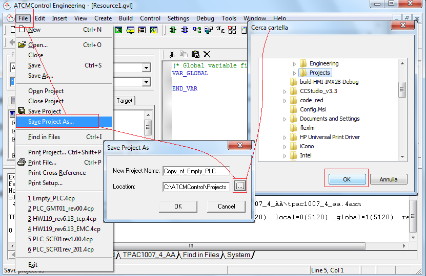
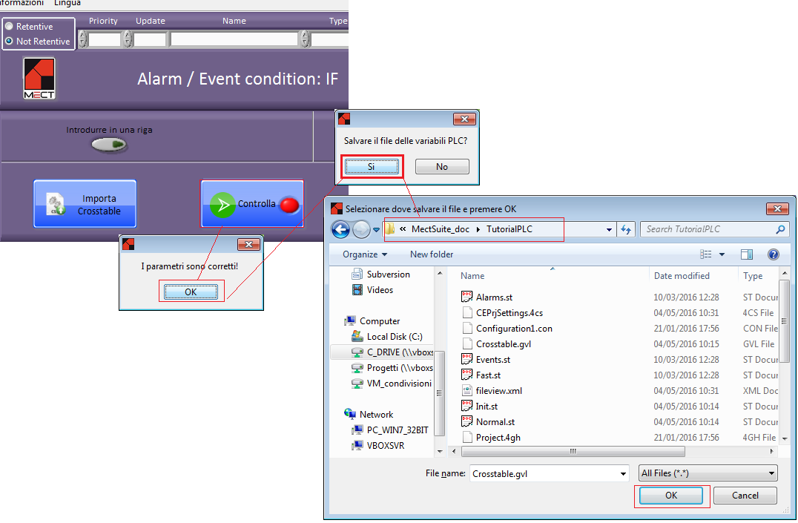
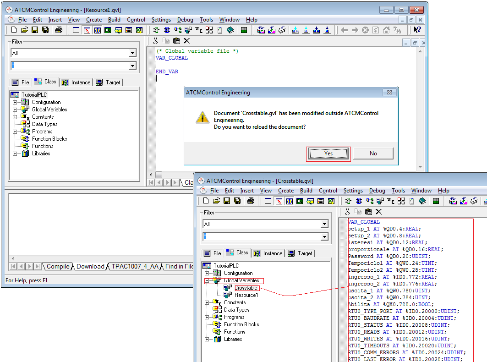
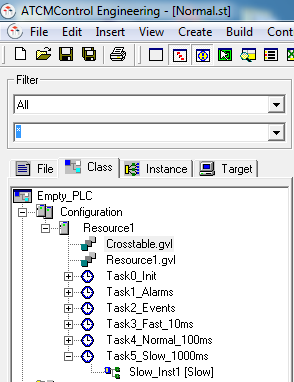

First of all it is necessary to substitute ATHW119_4CVM.kad file in the installation folder: ATCMControl → Engineering → bin → ATHW119 with the same file in the installation key (updated version).
To open a project with default tasks follow path (MectSuite_xy → MectApps_xy → “AnyTPAC” → Empty_PLC) to open file Emty_PLC.4cp with “ATCM control”.
WARNING: program for PLC “ATCMControl” must be run as administrator (right click and “Run as administrator”).
The loaded project must be renamed in order to reuse it:
Select in the File menu
Save Project As…
Press “…” key in the windows that opens
Then select the folder where to store the project and press OK
Insert the project name in the row New Project Name

After the project is created, import Crosstable variables into PLC. To do this, in the HMI project open the Crosstable Editor program.
Press “Controlla” key
Press OK
Answer YES at the question “Save the plc variables file?”

The window to choose where to insert the variables file opens.
The variables file must be inserted in the PLC folder just created.
Go back to the ATCMControl environment and look at how the Crosstable variables has been imported in the PLC project.

Then choose Class tag
Expanding “Configuration” and “Resource1” file “Crosstable.gvl” and several Task are found.

Crosstable.gvl file contains all global variables that is possible to use in the PLC. This file must be used in read only and must not be modified. WARNING: these variables are created in the “Crosstable Editor” and for this reason every time we add a new variable in the Crosstable it is necessary to press “Check” key and save in the PLC the variables.
There are 6 Task with different functionalities and cycle time:
Task0_Init: run only at PLC startup and for this reason has maximum priority. Usually used to initialize variables.
Task1_Alarms: has priority over all other tasks. It starts as soon as the alarm rises and the program inserted in the Task runs once. Task1_Alarms starts every times a new alarm rises.
Task2_Events: has priority over all other tasks except Task1_Alarms. It starts as soon as the event rises and the program inserted in the Task runs once. Task2_Events starts every times a new event rises.
Task3_Fast_10ms: task runs every 10ms.
Task4_Normal_100ms: task runs every 100ms.
Task5_Slow_1000ms: task runs every 1000ms
WARNING: we suggest to use Task4_Normal_100ms for most part of the application.
Inside every task there is at least one program, for example if Task5_Slow_1000ms is expanded there is program Slow_Inst1 where is possible to write, in this case in ST, part of the application. In this way it is possible write code inside present programs in every Task.